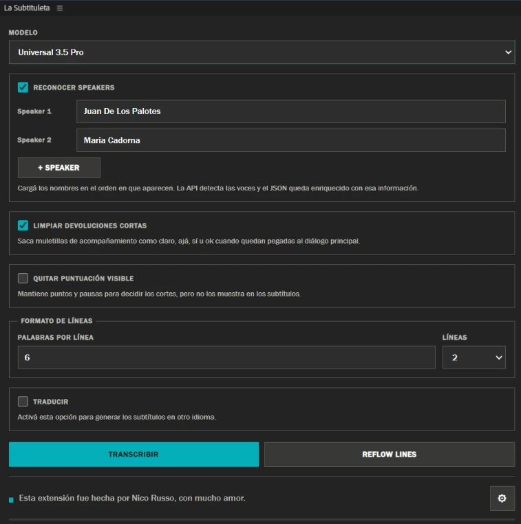
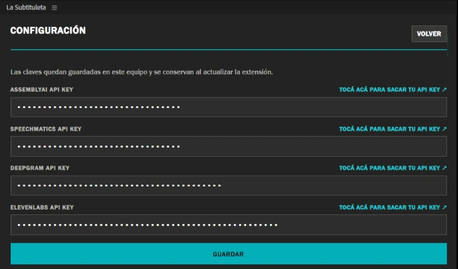

From 5 hours to 1 hour per episode.
A 12-episode reality show, 50 minutes each, mostly interviews.
“With La Subtituleta, correction time went from five hours to roughly one hour per episode. It's worked like a charm.”
Adolfo Ruiz, Medellín, Colombia
La Subtituleta is a FREE extension for Windows and Mac that transcribes Spanish with AI, translates your captions into many other languages, and puts them straight onto your Premiere timeline.
Free · No subscription · Bring your own API key


Acronyms, technical terms, regional slang and proper names. Fewer manual fixes.
Edit them the way you always have. With Reflow Lines, re-cut the lines for another format in seconds.
It identifies each speaker. Ideal for interviews, shows and multi-voice videos.
It generates data that Claude or ChatGPT can work with. For example, you can create motion graphics with the data La Subtituleta generates (video in Spanish).
The extension costs nothing: not now, not later, no paid version. To transcribe it uses a provider's AI, with your own account, and every provider gives you plenty of free hours to get started. No credit card. If you ever use them up, each provider has its own prices. We don't charge or earn anything.
The best ear for Rioplatense Spanish (Argentina, Uruguay): regional slang, nicknames and tough proper names.
Free from ElevenLabs2.5 hours per monthevery month, no credit card
The best for interviews and multi-voice recordings: it separates speakers really well.
Free from SpeechmaticsAbout 250 hoursUSD 100 credit, no credit card
The cleanest output: tidy punctuation, ready-to-use numbers and recognized acronyms.
Free from AssemblyAIAbout 200 hoursUSD 50 credit, no credit card
The biggest free credit to get started.
Free from DeepgramOver 600 hoursUSD 200 credit, no credit card
Based on our benchmark with a real 48-minute show with two voices. A guide, not a rule. ElevenLabs is the only one whose free credit renews every month.
No account on La Subtituleta. Install it, paste your API key, done.
Close Premiere, download the ZIP and extract it completely.
Double-click INSTALAR.cmd.
Window > Extensions (Legacy) > La Subtituleta. Click the gear icon, paste an API key and save.
You need Premiere Pro 2024 or later. The app isn't signed by Apple yet, so macOS will ask you for an extra confirmation. That's normal.
Quit Premiere (Cmd+Q), download the ZIP and double-click it to extract.
Double-click INSTALAR.command. If macOS blocks it: System Settings > Privacy & Security > Open Anyway. No admin password and nothing else to install.
Window > Extensions (Legacy) > La Subtituleta. Click the gear icon, paste an API key and save.
INSTALAR.command > Open may be enough. Don't turn off your Mac's global security./bin/bash followed by a space, drag INSTALAR.command from Finder into that window and press Enter. Don't type the path by hand or use sudo.It doesn't ask for an admin password or require Python or Node.
Tried it on your Mac? Tell us your Premiere and macOS versions, and whether it's Apple Silicon or Intel: nico@nicorusso.com.

INSTALAR and a single API key are enough).DESINSTALAR.Step-by-step video tutorials. They're in Spanish: turn on YouTube's automatic subtitle translation.
From 5 hours to 1 hour per episode.
A 12-episode reality show, 50 minutes each, mostly interviews.
“With La Subtituleta, correction time went from five hours to roughly one hour per episode. It's worked like a charm.”
Adolfo Ruiz, Medellín, Colombia
“…it works great, the number of corrections compared to Premiere's transcription drops enormously, and it manages to recognize all or almost all of the acronyms and concepts mentioned in the course, even with just one model connected…”
“…it understands Spanish much better, and what I like most is that the transcripts come out as JSON, because it's ideal for clipping with AI.”
“…it's very good, it solves exactly the issues I had with Premiere. What I liked most is the API options: they're varied and give enough credits. Thanks for sharing this app.”
“I tried La Subtituleta! It works wonderfully.”
@dastys05 · Instagram“I just tried it and it's incredible…”
@leo.senderovsky · Instagram“The best addition to my setup.”
@adoruiz90 · Instagram“A lifesaver.” · “The best Premiere plugin.” · “A great contribution.”
Reel comments · InstagramAll quotes translated from Spanish.
Yes, completely free, forever. The extension has no paid version and we charge nothing. The only thing that can cost money is the AI provider you pick, and they all give you free credit to start: roughly 200 to over 600 hours of audio with AssemblyAI, Speechmatics and Deepgram, and about 2.5 hours per month with ElevenLabs.
It's a password the AI provider gives you so La Subtituleta can send your audio to them and get the text back. You get it yourself, for free, by creating an account with the provider (usually your email or Google login is enough). It's a long code you copy and paste once into the extension's gear menu, and it stays on your computer. It's personal: don't share it with anyone, not even me.
Not to get started. No provider asks for one to get the API key and use the free credit. Later, if you run out of credit, they may ask for one (see below).
The credit from AssemblyAI, Speechmatics and Deepgram is a one-time starting credit per account and doesn't renew (ElevenLabs does, every month). When it's gone: AssemblyAI asks you to add funds or turn on billing, Speechmatics asks you to add a card and moves to pay-as-you-go, and Deepgram moves to pay-as-you-go. It costs roughly USD 0.20 to 0.40 per hour of audio. You never pay La Subtituleta anything.
Test it and measure it: transcribe a couple of videos, check how much credit you used in your provider's dashboard, and work out the cost per hour. If you use it every month, compare it to the hours you now spend fixing captions by hand. You can also spread the work across several providers.
Yes. You need Premiere Pro 2024 or later. The app isn't signed by Apple yet, so macOS will ask you for an extra confirmation (it's explained above, in the install section). If you try it, tell us your Premiere and macOS versions, and whether your Mac is Apple Silicon or Intel.
It works. La Subtituleta detects the video's language on its own and, if you want, translates the captions into many other languages (English, Portuguese, French, German, Italian, Japanese, Chinese, Korean and more).
The API detects when the speaker changes, but it can't know what each person is called. You enter the names in the order they appear (Speaker 1, Speaker 2…) and that information is stored in the JSON.
For now La Subtituleta is available for Premiere Pro, on Windows and Mac. Nico Russo wants to keep it that way: Premiere is the program he uses every day, and that's how he builds and improves it. The key is that tools should be made by the people who use them. If you use DaVinci and want to collaborate with Nico (testing, helping launch it and keep testing it from time to time), write to nico@nicorusso.com.
It's almost always fixed in a minute. Find the message you see:
“API 401: Invalid credentials”The key isn't valid or belongs to a different provider.Delete it in Settings, save, and paste a valid key from the same service as the selected model.
“getaddrinfo ENOTFOUND” or “read ECONNRESET”The connection to the provider dropped.Check your Internet and try again in a few minutes.If it keeps happening, try another network or another engine.
“Premiere couldn't export the audio”Premiere didn't hand over the sequence audio.Save the project, quit and reopen Premiere, activate the sequence and try again.
“EvalScript error”This is a generic Premiere notice.Save the project, restart Premiere and try again.
“ElevenLabs reported that you have no credits available”The credit on that account ran out.Choose “Use another” to keep going with another engine, or add credit on ElevenLabs.
Still failing?Write to nico@nicorusso.com with a screenshot of the error and these details: La Subtituleta version, Premiere version, your system (Windows or Mac), the engine you used and what you were doing (Transcribe or Reflow Lines).Never send me your API key or the config.json file.
La Subtituleta has no servers of its own: it doesn't receive or store your audio. To transcribe, the audio goes straight from your computer to the AI provider you chose, and each provider has its own terms of use and confidentiality. If you work with confidential material or under an agreement with your client, read the provider's policies before uploading and use your own judgment.
So you don't spend hours fixing captions. It understands acronyms, regional slang and proper names, cuts lines the way an editor would, separates speakers and gives you a JSON to work with your AI. And you choose the engine.